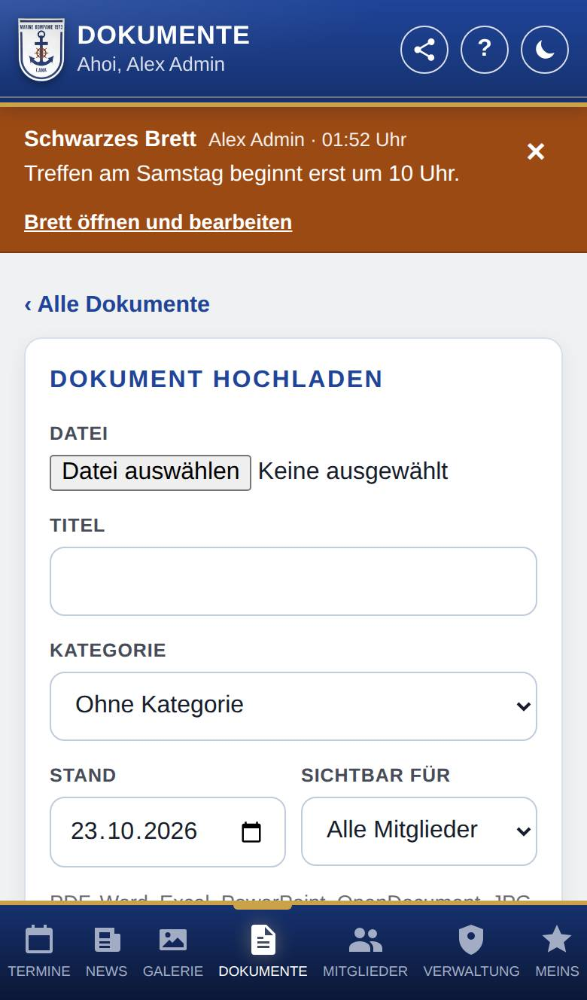
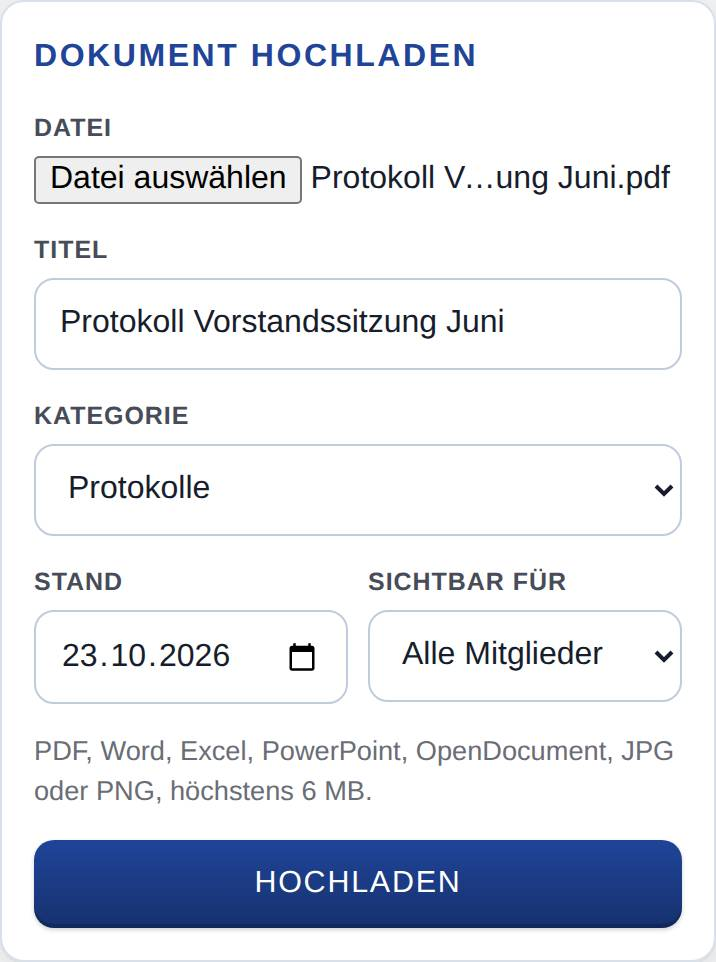
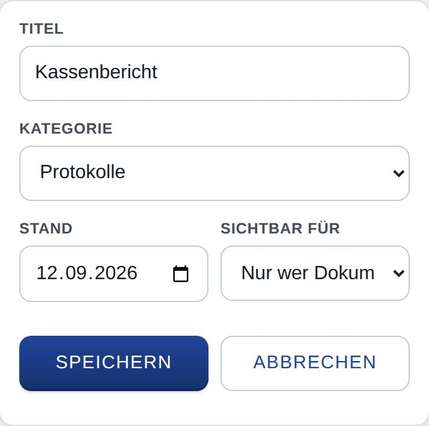
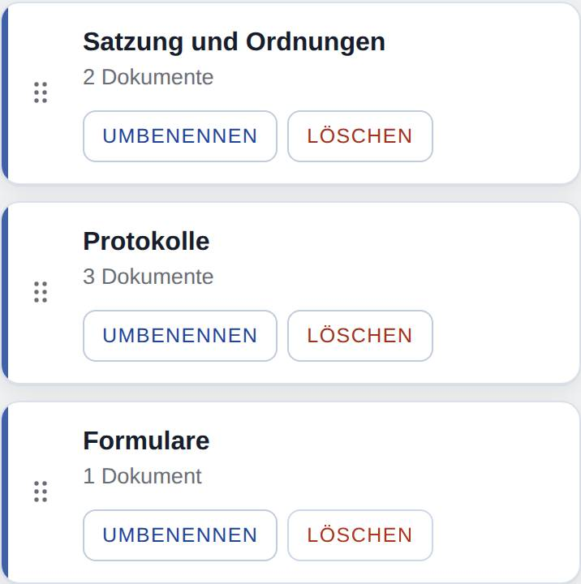

Dokumente verwalten
Nur, wenn Dokumente eingeschaltet ist.
Auf dieser Seite stellst du Dokumente für die Mitglied bereit: Du lädst Dateien hoch, änderst Titel, Kategorie und Sichtbarkeit, ersetzt eine Datei durch eine neue Fassung und legst Kategorien an.

So öffnest du die Seite
Tippe unten auf Dokumente und oben auf Dokumente verwalten. Den Knopf sieht nur, wer Dokumente pflegen darf (z. B. mit der Rolle „Dokumente verwalten“).
Was du hier siehst
- ‹ Alle Dokumente: zurück zur Liste, wie die Mitglied sie sehen.
- Dokument hochladen: Formular für ein neues Dokument.
- Dokumente: alle Dokumente, nach Kategorien geordnet, mit Sortierung. Bei jedem stehen Kategorie, Stand, Art und Größe der Datei und für wen es sichtbar ist, dazu die Knöpfe Bearbeiten, Neue Fassung und Löschen.
- Kategorien: Feld Neue Kategorie mit dem Knopf Kategorie hinzufügen und darunter die Liste der Kategorien mit der Zahl ihrer Dokumente, Umbenennen und Löschen.
So gehst du vor
Ein Dokument hochladen
- Tippe bei Datei auf das Feld und wähle die Datei aus. Die App schlägt den Dateinamen als Titel vor.
- Ändere bei Bedarf den Titel.
- Wähle die Kategorie oder Ohne Kategorie.
- Trage bei Stand das Datum des Dokuments ein. Vorbelegt ist heute.
- Wähle bei Sichtbar für, wer es sieht: Alle Mitglieder oder Nur wer Dokumente pflegt.
- Tippe auf Hochladen.

Danach ist die Kategorie des neuen Dokuments aufgeklappt, und du siehst es in der Liste.
Titel, Kategorie, Stand oder Sichtbarkeit ändern
- Klappe die Kategorie auf und tippe beim Dokument auf Bearbeiten.
- Ändere die Felder.
- Tippe auf Speichern. Mit Abbrechen bleibt alles, wie es war.

Eine neue Fassung hochladen
- Tippe beim Dokument auf Neue Fassung.
- Wähle die neue Datei aus. Die App speichert sie sofort; Titel, Kategorie, Stand und Sichtbarkeit bleiben.
Die alte Datei wird dabei gelöscht. Passt der Stand nicht mehr, ändere ihn danach mit Bearbeiten.
Ein Dokument löschen
- Tippe beim Dokument auf Löschen.
- Bestätige die Nachfrage. Das Dokument und seine Datei sind dann weg.
Kategorien anlegen, umbenennen und ordnen
- Trage unten bei Neue Kategorie einen Namen ein, z. B. „Protokolle“, und tippe auf Kategorie hinzufügen.
- Zum Umbenennen tippe bei der Kategorie auf Umbenennen, trage den neuen Namen ein und bestätige.
- Zum Ordnen ziehe eine Kategorie am Griff links (sechs Punkte) an die gewünschte Stelle. Am Computer geht das auch mit der Tastatur: Griff mit der Tab-Taste wählen, dann Pfeil hoch oder runter.

In dieser Reihenfolge stehen die Kategorien auch bei den Mitgliedn.
Gut zu wissen
- Erlaubt sind PDF, Word, Excel, PowerPoint, OpenDocument sowie JPG- und PNG-Bilder, höchstens 20 MB. Nimmt der Server nur kleinere Dateien an, steht die Grenze unter dem Formular.
- Der Titel darf höchstens 191 Zeichen lang sein. Zwei Kategorien dürfen nicht gleich heißen.
- Nur wer Dokumente pflegt eignet sich z. B. für Kassenberichte. Andere Mitglied sehen solche Dokumente gar nicht; in der Liste steht bei ihnen Eingeschränkt.
- Löschst du eine Kategorie, bleiben ihre Dokumente erhalten und stehen danach unter Weitere Dokumente.
- Wer ein Dokument auf dem Gerät gespeichert hatte, bekommt nach einer neuen Fassung beim nächsten Öffnen die neue. Gelöschte Dokumente entfernt die App auch von den Geräten der Mitglied, sobald sie dort die Liste der Dokumente öffnen.
- Beim Hochladen gibt es keine Benachrichtigung.